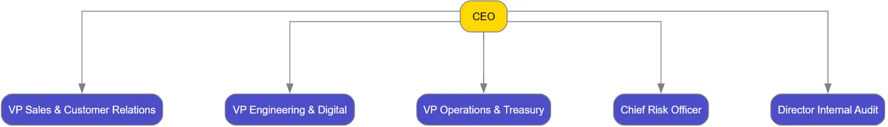

Organizational Intelligence in Action
This article follows a real-world journey at a Softabank (Virtual bank name, BCEAO-regulated). We deliberately start with a realistically flawed, non-compliant structure — exactly what you often inherit in practice — then use stzOrgChart’s intelligence layers to detect, explain, and repair every issue, before finally simulating a strategic reorganization.
par Mansour Ayouni · dans le dépôt depuis le 2025-11-28 · cas d'usage · domaine Diagrammes et graphes
Cet article est écrit en anglais, comme la bibliothèque.

A Complete Banking Scenario with stzOrgChart – From Non-Compliant to Fully Governed
stzOrgChart is a living organizational intelligence platform that combines precise modeling, automated regulatory validation, programmable rules, semantic reasoning, graph analytics, quantitative simulation, and executive visualization — all in pure Haro, completely free.
For the full technical reference, see the main article:
stzOrgChart – The Strategic Organizational Intelligence Platform
The Inherited Reality – A Non-Compliant Starting Point
Most organizations do not begin perfect. Here is the structure the new Chief Risk Officer discovered on her first day:
oOrg = new stzOrgChart("Softabank – Inherited Structure (Flawed)")
oOrg {
AddExecutivePositionXT("ceo", "CEO")
AddManagementPositionXT("vp_sales", "VP Sales & Customer Relations")
AddManagementPositionXT("vp_eng", "VP Engineering & Digital")
AddManagementPositionXT("vp_ops", "VP Operations & Treasury")
AddManagementPositionXT("dir_risk", "Chief Risk Officer") # Reports to CEO → BCEAO violation
AddManagementPositionXT("dir_audit","Director Internal Audit")# Reports to CEO → BCEAO violation
ReportsTo("vp_sales", "ceo")
ReportsTo("vp_eng", "ceo")
ReportsTo("vp_ops", "ceo")
ReportsTo("dir_risk", "ceo") # Should report to Board
ReportsTo("dir_audit", "ceo") # Should report to Board
# No Board of Directors at all → critical BCEAO failure
# Staff and people
AddPersonXT("p_ceo", "Jean-Baptiste Kouassi")
AssignPerson("p_ceo", "ceo")
SetPositionDepartment("vp_sales", "sales")
SetPositionDepartment("vp_eng", "engineering")
SetPositionDepartment("vp_ops", "operations")
SetPositionDepartment("dir_risk", "risk")
SetPositionDepartment("dir_audit","audit")
SetLayout(:LeftRight)
SetSpline("curved")
View()
}illustration
First Diagnosis – Let the Intelligence Engine Speak
We immediately run the full compliance suite:
? "=== REGULATORY VALIDATION ==="
? Validate(:BCEAO) # → FAIL with 3 critical issues
? Validate(:SpanOfControl)
? Validate(:SegregationOfDuties)
? Validate(:GDPR)
? Validate(:SOX)
? Validate(:BANKING)illustration
The structured output is devastating but precise:
BCEAO-001: No Board of Directors found BCEAO-002: Audit function does not report to Board BCEAO-003: Risk Management function does not report to Board Overall status: NON-COMPLIANT
We also activate custom bank rules using Softanza’s rule engine:
WhenNodeExists("dir_risk")
if not ReportsDirectlyTo("dir_risk", "board")
AddFinding("CUSTOM-RISK-001: Chief Risk Officer must report exclusively to Board",
:severity = :critical, :regulation = "BCEAO Art. 47")
ok
WhenNodeExists("dir_audit")
if not ReportsDirectlyTo("dir_audit", "board")
AddFinding("CUSTOM-AUDIT-001: Internal Audit must be independent",
:severity = :critical)
ok
? "=== CUSTOM FINDINGS ==="
? @@NL( Anomalies() )illustration
The system instantly highlights the exact governance gaps — no manual audit required.
Repairing the Structure – Intelligence-Guided Remediation
Using the findings as a checklist, we fix the structure in minutes:
# 1. Create the missing Board
AddExecutivePositionXT("board", "Board of Directors")
# 2. Correct reporting lines for independence
ReportsTo("ceo", "board") # CEO now reports to Board
ReportsTo("dir_audit", "board") # Independent audit
ReportsTo("dir_risk", "board") # Independent risk
# Re-run validation instantly
? "=== AFTER REMEDIATION ==="
? Validate(:BCEAO) # → PASS
? @@NL( Anomalies() ) # → [] Empty – fully clean
View() #todo ViewConformant() ViewNonConfromant()illustration

The same code that detected the problems now confirms perfect compliance.
No external consultants. No months of workshops.
Enriching with Semantic Intelligence
With structure now solid, we layer meaning using Knowledge-Oriented Programming:
oKG = new stzKnowledgeGraph("EcobankSemantics")
oKG {
AddFact("board", :IsA, "GovernanceBody")
AddFact("dir_risk", :IsA, "ControlFunction")
AddFact("dir_audit", :IsA, "ControlFunction")
AddFact("dir_risk", :Criticality, "VeryHigh")
AddFact("p_ceo", :Tenure, 15)
AddFact("p_ceo", :SuccessionReadiness, "Low")
DefineClass("ControlFunction", "Position")
}
? "Control functions in the organization:"
? @@( oKG.Query(["?p", :IsA, "ControlFunction"]) )illustration
Strategic Question: Should We Create a Digital Banking Division?
The Executive Committee wants to accelerate digital transformation. Proposal:
- Create a new Director of Digital Banking
- Move VP Engineering (and future IT Security team) under this director
- Director Digital reports directly to CEO
Before committing, we simulate the impact quantitatively:
aChanges = [
[:type = "add_position", :id = "dir_digital", :title = "Director Digital Banking"],
[:type = "change_reporting", :subordinate = "vp_eng", :supervisor = "dir_digital"],
[:type = "change_reporting", :subordinate = "dir_digital", :supervisor = "ceo"]
]
? "=== REORGANIZATION SIMULATION RESULTS ==="
? SimulateReorganization(aChanges)illustration
The engine returns a precise before/after comparison:
Metric Before After Change ────────────────────────────────────────────────── Average span of control 3.8 3.2 ▼ 15% (healthier) CEO direct reports 5 4 ▼ 1 (reduced bottleneck) Max depth 3 4 ▲ 1 Betweenness CEO 0.78 0.61 ▼ 22% (lower centralization risk) Vacancy rate 78% 82% ▲ 4% (new position created) Structural risk score 8.1 6.9 ▼ 15% (improved resilience)
The simulation proves the reorg reduces CEO overload, lowers communication bottlenecks, and improves agility — all while creating only one new vacancy (acceptable given the strategic priority).
Decision: Approved and implemented in the same script.
Final Executive Deliverables
# Apply the approved changes for real
oOrg.ApplyReorganization(aChanges)
GenerateReport("summary")
GenerateReport("succession") # Now flags only CEO as high-risk
GenerateReport("compliance") # Clean
ColorByDepartment()
HighlightNode("dir_digital", :color = "cyan+") # New strategic unit
HighlightPath("dev_a", "ceo") # Show new reporting chain
View()illustration
The board receives a perfect visualization with departments in color, the new Digital unit highlighted, and all governance findings resolved.
From Chaos to Strategic Mastery – In One Afternoon
We started with a non-compliant, risky structure.
In under 150 lines of code we:
- Detected every regulatory and policy breach automatically
- Fixed them with surgical precision
- Added semantic intelligence
- Quantitatively proved a major reorganization improves resilience
- Delivered board-ready reports and visuals
No Workday. No OrgVue. No Lucidchart. No $300K consulting engagement.
Just Softanza — pure, open Haro code, infinitely powerful organizational intelligence. Welcome to the future of organizational engineering.
Lectures liées
- Introducing stzOrgChart - The Strategic Organizational Intelligence Platform
- Intelligence in Motion: Graph Planning in Softanza
Citer
Mansour Ayouni. « Organizational Intelligence in Action ». Softanza narrations, 2025. https://mayouni.github.io/stzsite/fr/narrations/stzorgchartdoc-bankusecase.html
Exécuté au nom de Haro le 2026-10-08 20:44 dans la bibliothèque au commit 4a184e6f0, bloc après bloc dans un seul processus : 0 bloc(s) sur 7 ont tenu leur promesse ; les autres sont des illustrations. Le code des articles est du code Haro. Là où un article a été écrit avant que la langue prenne son nom actuel, le nom a été changé et rien d'autre. Genre, domaine et série lus dans le nom du fichier, année tirée du premier commit : dérivés, jusqu'à ce que l'article porte son propre en-tête. Le fichier sur GitHub(s'ouvre dans un nouvel onglet)